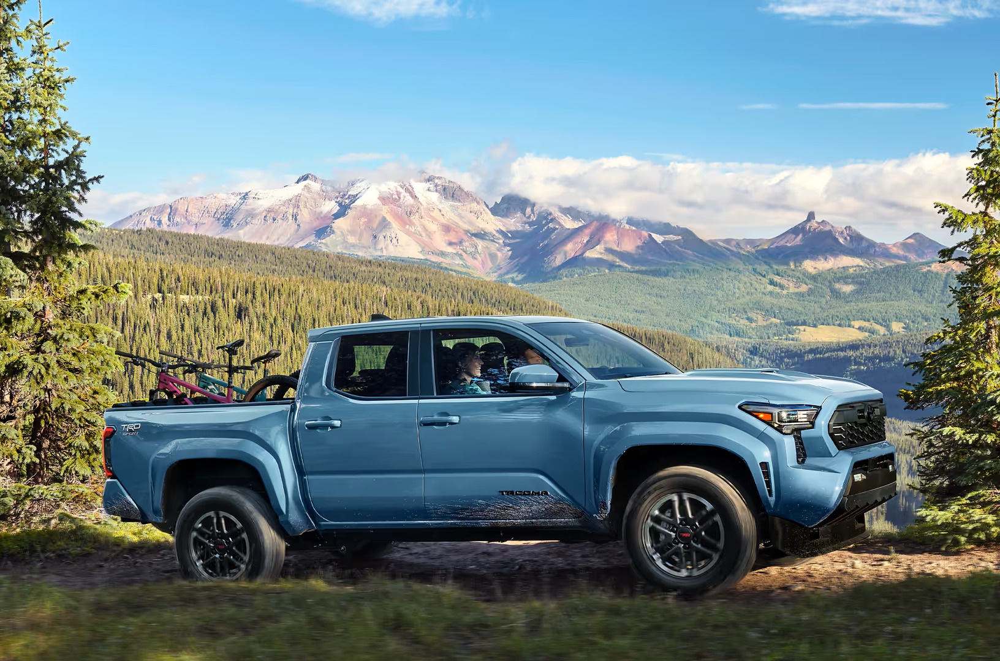

Enginei-FORCE turbo
2.4L turbo four replaced the V6
Up to 278 hp and 317 lb-ft from the standard i-FORCE turbo four, per Toyota's published specs at toyota.com. The available i-FORCE MAX hybrid pushes that to 326 hp and 465 lb-ft.
Dalton Toyota National City runs fresh Tacoma lease and finance offers every month at 2400 National City Blvd. Tell us your budget and your average annual mileage, and we build the terms around them.

The Tacoma is built for Southern California drivers:
It's a mid-size truck that's worth the money, which is why so many National City drivers want a newer one in the driveway without committing to a decade of ownership.
Leasing solves that specific problem. It keeps you in a current-generation Tacoma with a predictable monthly payment and full factory warranty coverage for the entire term. You're paying for the years you drive the truck hardest, not for the long tail of ownership where repair bills creep in. Reviewed and posted by the Dalton Toyota National City sales and finance team.
If you tend to keep trucks for ten-plus years, drive heavy mileage, or want to build equity toward outright ownership, financing usually serves you better.
When the fourth-generation Tacoma started landing on our lot, our sales team spent the better part of a week walking every cab-and-bed combination, from SR to TRD Pro, before we let a customer near a key, because lease math only works if we can answer the towing, payload, and mileage questions honestly instead of reading them off a window sticker.
Lease math only works if we can answer the towing, payload, and mileage questions honestly, instead of reading them off a window sticker.
Note · Toyota's lease programs change month to month; the advertised payment you saw last month may not exist today. Confirm this month's Tacoma offer at toyotadalton.com for the current structure on a specific build.
The Tacoma was fully redesigned for the 2024 model year, and the truck on our lot today rides on Toyota's TNGA-F global truck platform, the same architecture under the Tundra and Sequoia. That matters for a lease, because the warranty you lean on for two or three years is covering a newer, stiffer, more capable truck than the generation it replaced.
On our lot now
Actual photos of a Tacoma at Dalton Toyota National City, 2400 National City Blvd on the Mile of Cars. Specific trim, color, and equipment vary by unit; see the live inventory page for what's in stock today.
Up to 278 hp and 317 lb-ft from the standard i-FORCE turbo four, per Toyota's published specs at toyota.com. The available i-FORCE MAX hybrid pushes that to 326 hp and 465 lb-ft.
Properly equipped. We confirmed that number against Toyota's spec sheet before quoting it, because tow ratings swing hard by configuration. Bring us your trailer weight.
Bed and drivetrain options (4x2 or 4x4) change both the payment and the build. The configuration you pick is a real lever on what you pay each month.
Plus Limited, TRD Pro, and the off-road Trailhunter. The trim you lease is the single biggest lever on your monthly payment.
EPA estimates for the non-hybrid Tacoma land in the low-to-mid 20s mpg combined depending on drivetrain, per fueleconomy.gov. The i-FORCE MAX hybrid trades some efficiency for torque, so if your commute matters more than your tow weight, that's something to consider. Here are the numbers worth knowing before you sign a Tacoma lease:
An SR5 Double Cab 4x2 and a TRD Off-Road 4x4 are different trucks at different payments, so the same advertised "Tacoma lease" headline rarely applies to both. When you tell us how you use the truck, daily commuter, weekend overlander, job-site hauler, we match you to the configuration that hits your target payment instead of upselling you into a trim you'll regret.
A lease is built on a handful of moving parts.
Toyota's lease programs change month to month, the advertised payment you saw in June may not exist in August. Residuals and incentives reset at a national cadence. You should confirm the current Tacoma offer before you drive over. You can see live deals at toyotadalton.com.
One more thing to keep in mind. Many people estimate their annual mileage at the low end to make the payment look good, but they pay for it at lease-end. Excess-mileage charges add up fast, and they're not negotiable once the truck has to be returned.
We'd rather quote you a 15,000-mile-a-year lease that costs a few dollars more per month than hand you a cheap 10,000-mile headline you'll blow past by spring.
We'd rather quote a 15,000-mile lease that costs a few dollars more than hand you a cheap 10,000-mile headline you'll blow past by spring.
When a customer told us last month she "barely drives," we checked her current odometer against her registration date. We found she was averaging closer to 14,000 a year, so we steered her to the higher allowance. That move saved her real money at turn-in, even though it made our quoted payment look a touch higher on paper.
Most lease disappointment comes from the fine print nobody walks you through. We do it before you sign, not after you turn the truck in. Here's the plain-English version of what lives inside a Tacoma lease.
None of this is meant to scare you off a lease, it's meant to make sure the lease you sign is the lease you think you signed.
When a customer brought back a TRD Off-Road this spring with two curb-rashed wheels, we walked the truck with him, showed him exactly which damage fell outside normal wear, and helped him handle it before turn-in rather than letting it land as a surprise line item. That's the kind of homework that keeps a lease honest.
Both paths put a Tacoma in your driveway. The right one depends entirely on how you drive, not on which one looks cheaper this month.
You like rotating into a newer truck on a regular cycle, your annual mileage is predictable, and you'd rather not deal with resale or out-of-warranty repairs.
You drive heavy or unpredictable miles, you modify your trucks, or you want to build equity and eventually own the Tacoma outright.
Two "Tacoma leases" at the same monthly number can be wildly different deals once you account for term, miles, money down, and money factor. Ask every store for all four.
We put the two payment structures side by side so you decide with full information. That's how we've done business on the Mile of Cars.
Anyone who tells you leasing is always a trap, or always the deal, is selling something. We put both structures side by side so the math decides.
National City sits at the heart of the Mile of Cars, which means real competition and real selection. The trap is easy to fall into: cross-shopping a headline lease payment from one lot to the next without ever comparing the structure underneath.
One reason a Tacoma lease feels safe is the truck's track record. We verify each vehicle's current safety picture ourselves.
The Insurance Institute for Highway Safety publishes Tacoma crash-test results at iihs.org, and the National Highway Traffic Safety Administration posts federal star ratings and any open recalls at nhtsa.gov.
Before we hand a leased Tacoma to a customer, our service team runs the VIN through NHTSA's recall lookup to confirm there are no open campaigns, that's a five-minute check that protects you for the entire term.
Standard Toyota Safety Sense on the current Tacoma bundles four driver aids Toyota lists as standard across the lineup on toyota.com:
For a leased truck, that matters twice: it protects you on the I-5, and a clean, undamaged truck means a smoother lease-end return with no surprise damage charges.
When your Tacoma comes in for service, our techs follow Toyota's published maintenance schedule and tell you what is due versus what can wait, which keeps a leased truck in warranty-correct, return-ready shape from day one.
Service hours are Mon–Fri 7:00 AM – 6:00 PM and Sat 8:00 AM – 5:00 PM (closed Sunday); our parts counter keeps the same weekday and Saturday hours.
Here's the path from interest to ignition, then come see us on the Mile of Cars at 2400 National City Blvd, National City, CA 91950: an easy drive from San Diego, Chula Vista, and the South Bay.
Check toyotadalton.com to see this month's live Tacoma lease and finance specials.
Know your numbers and your money factor before you arrive, so the payment conversation starts from real figures.
We match trim, cab, and drivetrain to your budget and your real mileage, not a one-size headline.
We'll show lease and finance side by side, no pressure, so the math decides.
Leave National City in your new Tacoma, ready for adventures as you are.
Dalton Toyota National City has earned the Chamber of Commerce Mile of Cars Dealership of the Year recognition, and we put that same standard into every Tacoma lease we write.
View all hours at toyotadalton.com/hours →
Ready when you are? Start at toyotadalton.com to see this month's Tacoma offers.
We're a family-run Toyota store on the Mile of Cars, rated 4.6 stars across 6,258 Google reviews. We bring that same standard to every Tacoma lease we write at 2400 National City Blvd.
We keep every lever on the table, term, mileage allowance, money down, residual, and money factor, and confirm this month's live Tacoma structure before you drive over.
Standard i-FORCE 2.4L turbo four with an available i-FORCE MAX hybrid, up to 6,500 lbs of towing properly equipped, and standard Toyota Safety Sense across the lineup.
We run lease and finance side by side so the math, not the sales pitch, decides, with a straight read on what's on the ground or inbound.
Toyota's lease programs reset monthly as residuals and incentives change nationally. Check toyotadalton.com for this month's live Tacoma lease and finance offers, and we'll quote you the current structure.
Most run between 24 and 39 months. We structure the term and the mileage allowance around how you drive, not around the headline payment.
Often, yes, though more money up front lowers your monthly payment and less raises it. We'll show you several structures so you can choose the trade-off that fits your budget.
Be honest with yourself. Most drivers underestimate, then pay excess-mileage charges at turn-in. We'd rather check your current odometer against your registration and size the allowance right the first time.
Many Toyota leases include a purchase option at a price set when you sign. Ask our finance team to confirm the buyout terms on your specific lease before you commit.
The truck's capability doesn't change because it's leased, a properly equipped 2025 Tacoma is rated to tow up to 6,500 pounds per Toyota's official specs at toyota.com. Bring your trailer details and we'll match you to a configuration that handles them.
Yes. Equity in your current vehicle can lower your cost to start. Bring it by 2400 National City Blvd for a same-visit appraisal.
Neither is universally better. Lease if you want a low payment and a newer truck every few years; finance if you keep trucks long, drive heavy miles, or want to own. We run both side by side so the math, not the sales pitch, decides.
Tacoma lease deals move fast, and the best terms don't sit around. See current offers at toyotadalton.com or visit us at 2400 National City Blvd on the Mile of Cars. Let's find the Tacoma, and the payment, that's ready for your next adventure.